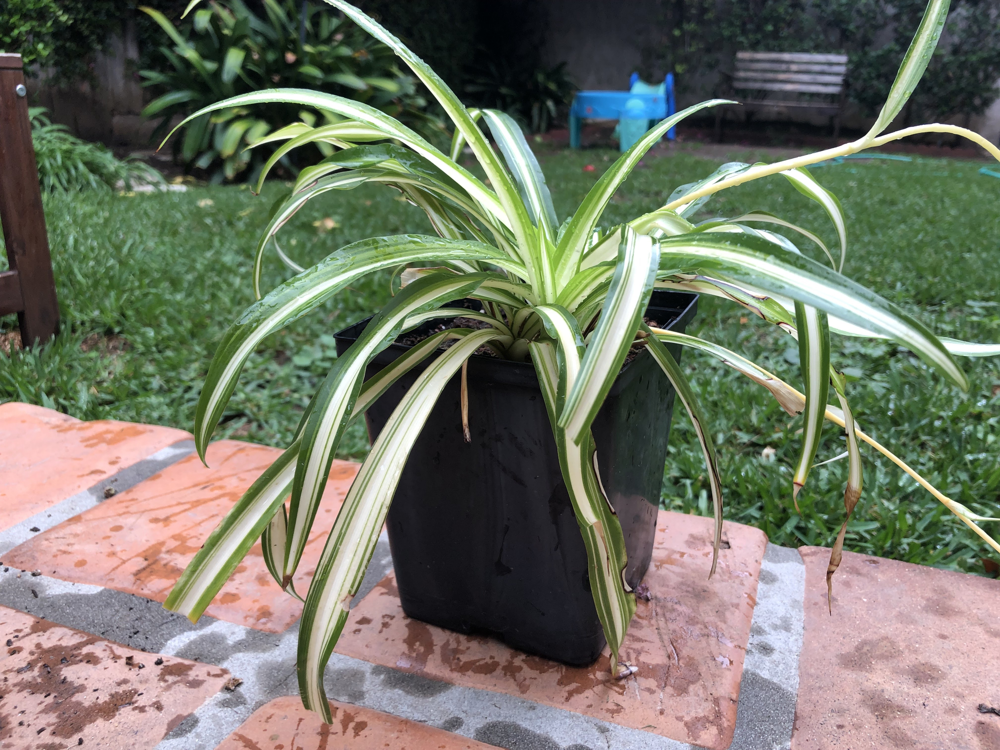

Dianne Puja
Dianne grew up in a house just off of Gardenton Square out in Verte Counrty. She wants to be a professionl journalist but for now she will settle for maintainig aestetically-pleasing blogs for her, her three siblings, and their orange tabby cat. Her favorite food is anything with lots of colorful protein, she runs crosscountry and needs all the energy she can get. However she refuses to sacrifice visual vibrancy in her quest for energy.
-GC